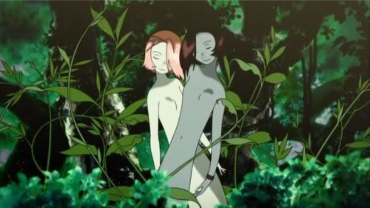

When I first started to seriously 'get into' anime (that is, when I started building a collection of DVD's), I started seeking out original anime feature films more often than television series: they were cheaper to own, quicker to watch, and usually of higher quality. But around this time (circa 2008), pickings were slim. Most of the classic films, like "Akira," "Ghost in the Shell," "Ninja Scroll" and others, were long out of print, further enhancing their legendary status with new fans (although most would slowly be available again in the decade that followed). Instead, I watched newer films that only came out a couple years prior. Like Studio Gonzo's 2006 film "Origin - Spirits of the Past.""Origin" was Gonzo's first original feature film, after a series of hit television series defined them as one of the most ambitious studios in anime. They clearly had high hopes for this movie. So did Funimation, the American distributor: they would release both regular and special editions of the movie, on DVD, then Bluray, under different labels (like "Viridian" and "S.A.V.E." when reduced in price), each with different covers. On the surface, the high-fantasy concept and pro-environment message makes "Origin" seem like it was attempting to mimic Studio Ghibli films. A Ghibli movie from the creators of "Last Exile" and "Gankutsuou?" Yes, please! Although, in the end it would be more comparable to a "Final Fantasy" video game than anything Ghibli would produce.In the introduction, we see a montage of images that seem to show a dragon made of trees rising from the moon, and attacking the Earth, set against a haunting and memorable vocal theme. Hundreds of years later, the human race has nearly gone instinct, save for a few underground towns that have managed to adapt. This is a world where the forest is sentient, and no longer hospitable to humans, the creatures that nearly destroyed the planet in their excess. Through the forest druids, and two child-like twins, the forest controls the planet's clean water, only allowing the small groups of remaining humans a limited supply, barely enough for drinking, let alone food or bathing. Some human towns want to revolt: in particular, the town of Ragna wants to get back its dominance, led by a human, Shunack, who remembers the way things used to be. In between is Neutral City, a peaceful town that acts as a mediator and barrier between the forest and these outside towns: while their living conditions aren't ideal, they accept it as part of their current way of life, and aim to find a way for the forest and humans to co-exist.Things change when Agito, a spritely boy from Neutral City, comes across ruins containing humans in artificial deep sleep, and accidently wakes up Toola, a girl from... roughly 2010? Through Toola's eyes, we see her be welcomed by Agito and his town, but the culture shock of waking up in a different time, and seeing how everyone struggles to survive, was too much to bear. And the forest becomes suspicious of this new girl, as her arrival is similar to Shunack (who also woke up from the past), currently their greatest enemy. When Shunack arrives to convince Toola to join their cause to return things "to normal," Toola agrees, and goes to Ragna. Knowning the consequences, Agito surrenders himself to the forest to gain its powers, turning into an 'enhanced' being, with the strength and agility of a plant (?), in order to fight and take back Toola.  In the first half of the movie, it shows promise. This new world is an interesting one, its characters with a good sense of humor (a fun opening scene shows Agito and his friend racing across the ruins), and pacing and direction solid. Even when Toola is found, things seem good. Toola is a strong and capable girl who seems to take well to the open arms of Agito and his friends, and any exposition dropped doesn't feel too overbearing. But issues come around when Shunack comes in: Toola seems to switch sides too quickly, and exposition to explain everything is relied on too often. The Ragna forces, in their generic red armor, seem much less interesting than the people of Neutral City. I can't help but wonder if the movie would have succeeded more without the action-packed second half, and instead relied on character drama entirely within Neutral City. But what we got has about the same neuance as a video game JRPG: an impressive world that's a little too fantastical, where things happen a little too quickly without proper build-up. It's not horrible by any measure, but a bit of a disappointment.As popular as Gonzo was in the mid-2000's, animation was usually not their strong point. In "Origin," they clearly did their best, producing some of the best animation in the studio's history. Alternatively, character design and art, usually Gonzo's strong point, is a bit weaker in "Origin," just a bit too generic, with only a few hints of unqiue and inspired visuals. Overall, the movie looks really good by standards set in the mid-2000's, but not up to the high points of anime films in previous or future decades. Funimation's English dub is solid, and the soundtrack is pretty great, both for that iconic vocal theme of the forest, and for the (again, video-game inspired) orchestra interludes. It's a shame that "Origin - Spirits of the Past" isn't fondly remembered. I think most fans think of it as too generic a fantasy, with overbearing themes of environmentalism, and less than exceptional visuals. I think it wasn't the success Gonzo needed, and it isn't a coincidence that they would have financial troubles just a couple years later. But it is a lot better than that would suggest, and if nothing else, it's amibitious nature and very original concept should be celebrated. It shouldn't be too high on your "must watch" list (especially when so many other exceptional films are available), but as a family-friendly sci-fi-fantasy with a positive message, it could be a good starting point for new anime fans. In the late 2000's, it was for me.
- "Ani" More reviews can be found at : https://2danicritic.github.io/ Previous review: review_Only_Yesterday Next review: review_Panty_and_Stocking_with_Garterbelt